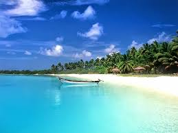

MIRISSA
.jpg)
"Mirissa is located in the south of SriLanka,between major cities of Galle and Matara. Initially, it was just one small street with a few accommodations and a roti shop. This now has become the popular beach hotspot in Sri Lanka. Mirissa is very popular among tourists. It can get pretty busy here.
Hotel contact
MARBLE BEACH
.jpg)
"Marble Beach is another beautiful beach located about 15.4 km east coast of Trincomalee district. The sea water of the Marble Sea is very clear and the seabed can be seen very clearly which is why this beach is names as the Marble Beach."
Hotel contact
UNWATUNA BEACH
"Unawatuna beach is the most popular Sri Lanka beach among tourists and locals. Unawatuna beach offers many water activities for visitors and there are sun-beds on the beach for rent. On the west side of the beach, you can take a stroll to the Japanese Peace Pagoda statue overlooking the beautiful Indian Ocean. Unawatuna beach is very well connected to the centre of Unawatuna where you will find hip cafes and resturants".
Hotel contact